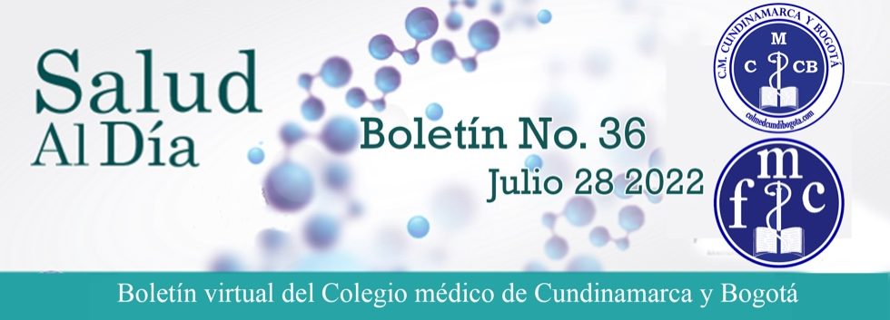
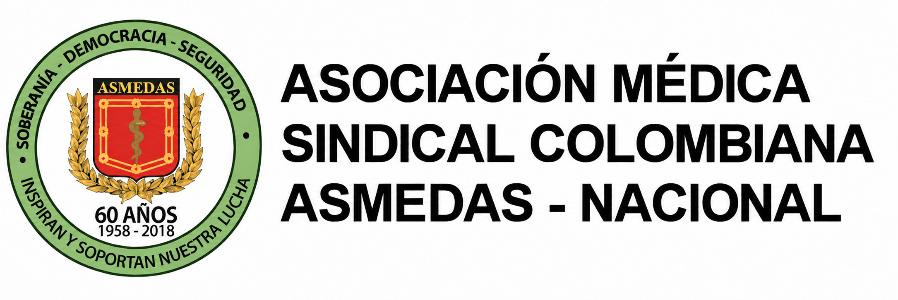
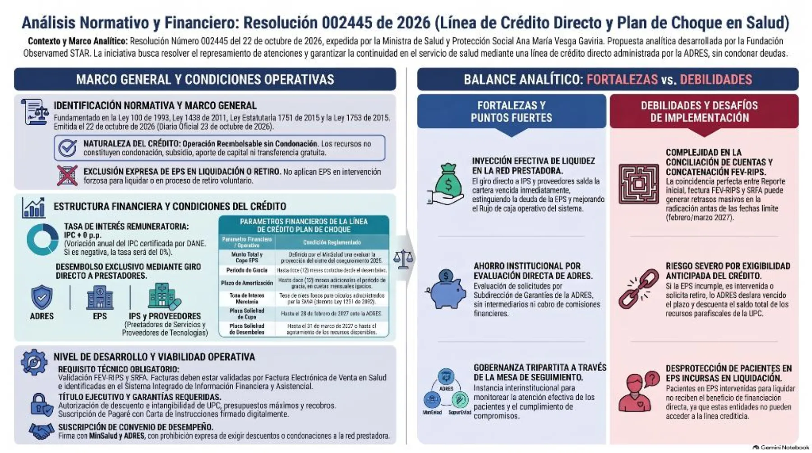

Análisis normativo y financiero de la línea de crédito que administra la ADRES para pagarles a los prestadores: reembolsable, sin condonación de deudas.

La Resolución 2445 del 22 de octubre de 2026 del Ministerio de Salud y Protección Social, publicada en el Diario Oficial el 23 de octubre, crea una línea de crédito directo administrada por la ADRES para atender el represamiento de atenciones y garantizar la continuidad del servicio.
Es una operación reembolsable: no es condonación, subsidio, aporte de capital ni transferencia gratuita. Quedan por fuera las EPS en liquidación o en retiro voluntario.
La tasa de interés es el IPC más cero puntos, y el desembolso se hace solo por giro directo a las IPS y a los proveedores. Las facturas deben estar validadas en FEV-RIPS y en el SRFA.
Fortalezas que señala el análisis: inyecta liquidez a la red prestadora, la ADRES evalúa las solicitudes sin intermediarios y hay una mesa de seguimiento entre MinSalud, la Superintendencia de Salud y la ADRES.
Debilidades: la conciliación de cuentas es compleja, el crédito puede volverse exigible antes de tiempo si la EPS incumple, y los pacientes de EPS intervenidas para liquidar no reciben el beneficio.
Material de la Fundación Observamed STAR, publicado tal como lo entregó el equipo del Dr. Óscar Iván Andía Salazar.
Observatorio del Medicamento
ISSN 0121-4675 · Res. Min. Gobierno 0036/91
Año 36 · 1991–2026